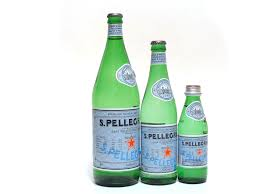
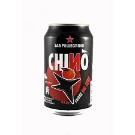

The best Italian restaurant in Sainte-Anne de Bellevue
| # | Description | Picture |
| 1 | Pizza Margarita:Sometimes you just can't beat fresh, simple, and classic Margherita Pizza. This homemade pizza hits the spot! | |
| 2 | Penne Napolitana:A light, vege-ful pasta and sauce dish. | |
| 3 | Insalata mista:A mixture of different kinds of greens with the addition of some vegetable, such as carrots, which give a different flavor and color. |
| # | Description | Picture |
| 1 | San Pellegrino:San Pellegrino is the finest Italian sparkling natural mineral water. |  |
| 2 | Chinotto:A soft drink with an unmistakable taste that is entirely made from Sicilian high-quality Chinotto oranges. |  |
| 3 | Vino:We offer a fine selection of fruity Italian wines. |
(C) by Frank Kuin, March 2016